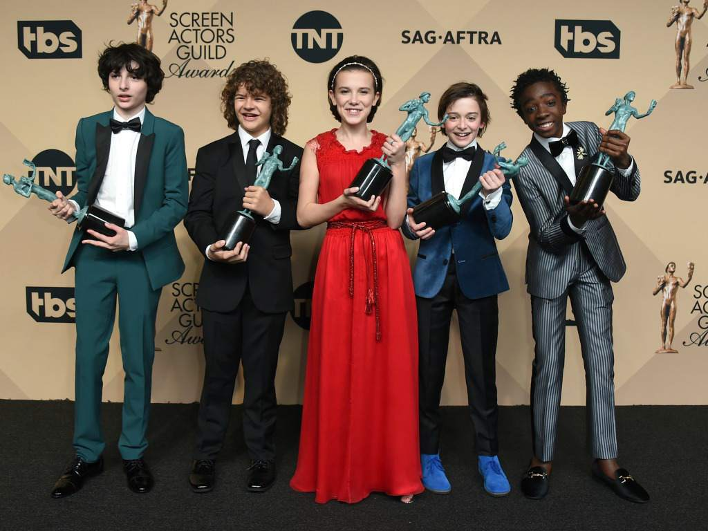

La historia arranca durante la década de los 80, en el ficticio pueblo de Hawkins, Indiana, cuando un niño llamado Will Byers desaparece, hecho que destapa los extraños sucesos que tienen lugar en la zona, producto de una serie de experimentos que realiza el gobierno en un laboratorio científico cercano. Además, en la ciudad aparecen fuerzas sobrenaturales inquietantes y una niña muy extraña. Ella, junto con los amigos de Will, se encargará de buscarlo, sin imaginar lo que tendrán que enfrentar para encontrarlo. Inadvertidamente, crearon un portal a una dimensión alternativa llamada "Upside Down". La influencia de Upside Down comienza a afectar a los desconocidos residentes de Hawkins de manera calamitosa.
La primera temporada comienza en noviembre de 1983, cuando Will Byers es secuestrado por una criatura del Upside Down. Su madre, Joyce, y el jefe de policía del pueblo, Jim Hopper, buscan a Will. Al mismo tiempo, una joven psicoquinética llamada Eleven escapa del laboratorio y ayuda a los amigos de Will, Mike, Dustin y Lucas, en sus propios esfuerzos por encontrar a Will.18
La segunda temporada se establece un año más tarde, comenzando en octubre de 1984. Will ha sido rescatado, pero pocos conocen los detalles de los eventos. Cuando se descubre que Will todavía está siendo influenciado por entidades del Upside Down, sus amigos y familiares descubren que existe una amenaza mayor para su universo desde el Upside Down

Personajes principales
Winona Ryder como Joyce Byers, madre de Will y Jonathan Byers.
David Harbour como Jim Hopper, jefe del Departamento de Policía de Hawkins. Hopper se divorció después del fallecimiento de su hija Sara, quien murió de cáncer a muy corta edad.
Finn Wolfhard como Michael "Mike" Wheeler, hijo de Karen Wheeler y hermano de Nancy Wheeler. Amigo de Dustin, Lucas y Will. Se enamora de Once (Eleven).
Millie Bobby Brown como Once (Eleven) o Jane, una niña con habilidades psicokinéticas y un vocabulario limitado. Se hace amiga de Lucas, Dustin y Mike, formando parte del grupo. Su verdadera identidad es la de Jane, hija biológica de Terry Ives. Se escapó del Laboratorio de Hawkins, donde realizaban experimentos con ella, para después pasar a ser adoptada por el jefe policial Jim Hopper.
Gaten Matarazzo como Dustin Henderson. Miembro del grupo de amigos de Mike, Lucas y Will.